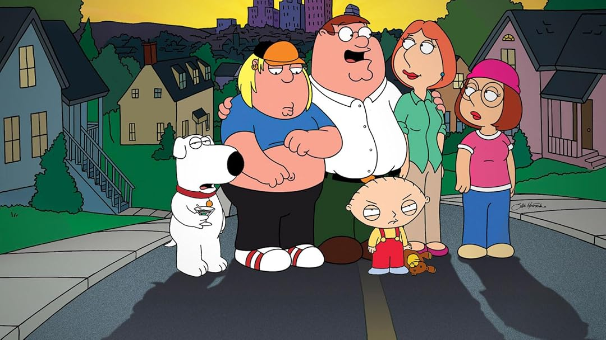

Introducción
Family Guy (conocida en español como Padre de familia) es una serie de televisión animada estadounidense de animación para adultos, creada por el director, guionista y cantante Seth MacFarlane el 31 de enero de 1999. La serie se centra en los Griffin, una familia disfuncional cuyos componentes son: los padres Peter y Lois; sus hijos Meg, Chris, y Stewie; y su perro antropomorfo Brian. La serie está situada en la ciudad ficticia de Quahog, Rhode Island.
Historia
Padre de familia se creó en 1999 tras (su predecesora) Larry Shorts atrayendo la atención de Fox durante los anuncios en la Super Bowl de 1999. Se anunció su cancelación, pero un cambio en la dirección de la cadena y las demandas del público les hicieron reconsiderar su postura, reanudándose en la tercera temporada. Tras el final de la temporada, la serie fue cancelada de nuevo. Las reposiciones en Adult Swim impulsaron el interés de que el programa continuase,más los beneficios en las ventas de los DVD en un año (2.2 millones de copias al año) renovaron el interés de la cadena. Padre de familia volvió a la producción en 2004 produciéndose cuatro temporadas más (de un total de siete) y una película directa en DVD titulada Stewie Griffin: The Untold Story. La serie celebró oficialmente el episodio 100 durante la sexta temporada en otoño de 2007, consiguiente a la sindicación de la serie. Actualmente, la serie tiene contratada hasta la temporada 24 la producción de nuevos episodios.
Creación
Padre de familia se emitió el 31 de enero de 1999 en Estados Unidos, previo al Super Bowl XXXIII. En Family Guy Live in Montreal, Seth MacFarlane comentó que quería hacer un programa animado para impresionar a una chica. Seth MacFarlane escribió el primer episodio del que sería el piloto de Padre de familia para el programa The Cartoon Cartoon Show de Cartoon Network.